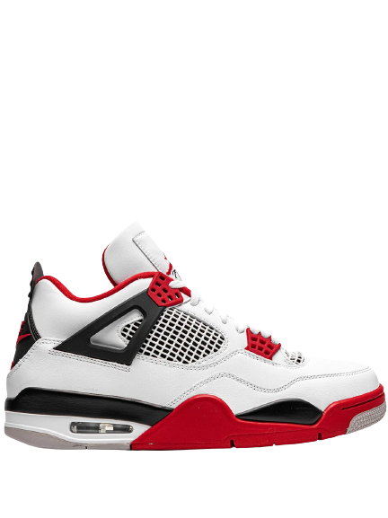
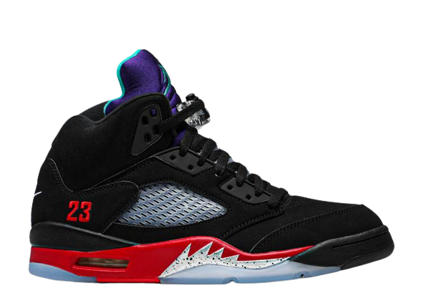
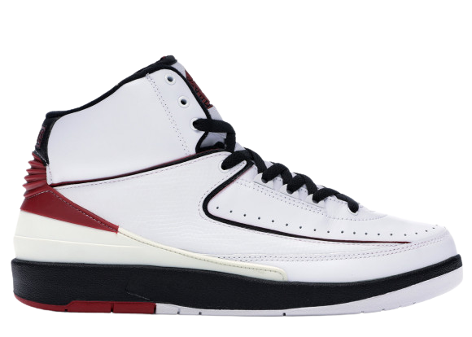

<!DOCTYPE html>
<html> 
</html>
<link href="https://use.fontawesome.com/releases/v5.6.1/css/all.css" rel="stylesheet">
<link rel="stylesheet" href="/css/products.css">
<body>
  <nav>
    <div class="container-image">
      <a href="index.html">
      </a><div class="meny">
        <ul>
          <li><a href="index.html">hem</a></li>
          <li><a href="products.html">produkter</a></li>
          <li><a href="om.html">om</a></li>
          <li><a href="kontakt.html">kontakt</a></li>
          <li><a href="documentation.html">dokumentation</a></li>

        </ul> 
      </nav>
    </div>
  </body>
    <header>
   
      <div class="container">
        <div class="row">
          <div class="card">
            
            <h4>Air Jordan 4 Retro Fire Red sneaker</h4>
        <p>Rund tå, platt gummisula, snörning i fram, meshpanel, märkets kännetecknande Air-stötdämpning, 
       märkets kännetecknande Jumpman-motiv, paneldesign med färgblock. 
       De här modellerna levereras av en förstklassig marknadsplats för sneakers.</p>
      <p>De är experter på att handplocka ett exklusivt urval av världens mest eftersökta sneakers.</p>
      <span>3 500kr</span>
       <a href="#" class="btn">buy now</a>
          </div>
          <div class="card">
            
            <h4>Air Jordan 5 Retro</h4>
      <p>Air Jordan 5 Retro Top 3 sneakers från jordan med rund tå, en platt sula, med knytning och sula med logotyp.</p>
      <p> Denna vara kommer från en exklusiv marknadsplats som säljer utsålda sneakers, som aldrig använts, 
        i begränsad upplaga. Varan har undersökts av experter för att garantera dess äkthet.</p>
        <p>Varan har undersökts av experter för att garantera dess äkthet</p>
        <span>5 440kr</span>
      <a href="#" class="btn">buy now</a>
           
          </div>
          <div class="card">
            
            <h4>NIKE AIR JORDAN 2 RETRO CHICAGO BULLS</h4>
            <p>Air Jordan 2 Retro "Chicago Home" dyker upp i en av silhuettens OG-färger.</p> 
            <p>  Med en ovandel i vitt läder med signaturen faux ödla hud överlägg nära ankeln, 
              perforeringar längs framfoten ingår för andningsförmåga.</p>
      <p>Svart och Varsity Red på detaljerna, 
      med den sistnämnda färgen även på hälen och plösbranding, kompletterar Bulls-looken, medan grått kommer fram på yttersulan. 
     Luft i mellansulan ger dämpning.</p>
            <span>4 200kr</span>
            <a href="#" class="btn">buy now</a>
          </div>  
          <div class="card">
            
       <h4>Wmns Air Jordan 4 Retro 'Canyon Purple'</h4>
      <p>Damernas Air Jordan 4 Retro "Canyon Purple" unnar Tinker Hatfields design från 1989 med en omfattande makeover.</p>          
     <p> Ovandelen ersätter skons traditionella läder- eller nubuckkonstruktion och är tillverkad av raggig mocka i en livlig lila finish. 
     Limegröna accenter landar på de spräckliga öglorna och mellansulan, medan Jumpmans signaturlogotyp pryder den vävda tunglappen i Safety Orange.       
     De ljusa nyanserna kompenseras av kontrasterande svarta träffar på de gjutna vingarna, 
     Jumpman-präglad hälflik och sillbensdragande gummiyttersula.</p>
            <span>3 600kr</span>
            <a href="#" class="btn">buy now</a>
          </div>
        </div>
        <div class="footer"></div>
          <div class="social"></div>
    </header>
      </html>